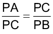

Grande Colisor de Hádrons - Large Hadron Collider (LHC). Organização Europeia para a Pesquisa Nuclear (CERN). Genebra, Suíça, 2011.
Circunferência
Maximilien Brice - CERN / NASA
converse
1. O comprimento da circunferência do Grande Colisor de Hádrons é 27 km. Como podemos calcular a medida do diâmetro desta circunferência?
2. Considerando-se = 3,14, qual é a medida aproximada do diâmetro da circunferência e do raio do Grande Colisor de Hádrons?

Conheça a maior máquina já construída
A maior máquina já construída na história está enterrada sob a fronteira da Suíça com a França. O Large Hadron Collider (LHC) — Grande Colisor de Hádrons, em português, é o maior acelerador de partículas existente no mundo.
Composto por um túnel circular de 27 km de circunferência, o LHC acelera prótons (partículas no núcleo de átomos) a altíssimas velocidades fazendo-os colidir entre si. Essas colisões produzem diversos outros tipos de partículas, permitindo aos físicos investigar o que compõe a matéria e a energia no nível mais elementar.
Reinaldo Rosa / Acervo da Editora.
Você já ouviu falar no quadrante náutico?
O quadrante náutico, possui algumas variações em seu formato como no quadrante inglês, no quadrante marinho ou ainda quadrante de Gunter. É um antigo instrumento náutico utilizado na época das Grandes Navegações, em geral pelos portugueses, e que calculava a distância entre a origem e o lugar onde a embarcação se encontrava com base na altura da estrela polar. O quadrante náutico é um instrumento bastante simples, consiste em um quarto de círculo com duas pínulas de pontaria (espécie de mira) perfuradas em um dos seus lados retos, um fio de prumo fixo ao centro do arco e uma escala de graduação de 0° a 90° inscrita na sua borda.
O quadrante tinha como função medir a altura dos astros para calcular a latitude que indicava a posição da embarcação no mar.
Ângulo central
O ângulo que tem como vértice o centro da circunferência denomina-se ângulo central.
Observe o arco da circunferência a seguir.
Dessa forma, temos que:

Ângulo inscrito
O ângulo que possui como vértice um ponto pertencente à circunferência e os lados secantes a ela denomina-se ângulo inscrito.
A medida do ângulo inscrito em uma circunferência é igual à metade da medida do arco correspondente, ou seja, é igual à metade da medida do ângulo central.

Vamos verificar a propriedade de um ângulo inscrito por meio do software GeoGebra. Para esse estudo, vamos utilizar a versão disponível em: https://www.geogebra.org/classic.

Em nosso exemplo, temos que:
α = 38,91° e β = 77,82°, ou seja, β = 2α.
Outras relações entre ângulos e circunferências

Temos nesse caso um ângulo α que equivale à metade da diferença entre as medidas dos arcos formados pelos seus lados, ou seja:
Temos nesse caso um ângulo excêntrico interno que possui medida igual à metade da soma dos arcos formados pelos seus lados, ou seja:
Quadrante náutico do séc. XVII. Acervo do Museu da Marinha de Lisboa.
Ângulos na circunferência


A frota de Cabral saindo do Tejo, Idealização do pintor português Roque Gameiro, reproduzido da "História da Colonização Portuguesa no Brasil". Revista Maritma Brazileira de 1928. Ano 1928\Edição 00111
Acervo Biblioteca Nacional do Brasil
Acervo/Museu da Marinha de Lisboa
Encontre soluções


|
Ângulo inscrito |
Ângulo central |
|
28° |
|
|
100° |
|
|
79° |
|
|
126° |
MODELO
MODELO
MODELO
Vamos recordar as posições relativas de uma reta em relação a uma circunferência e seus elementos.
A seguir, vamos estudar as relações métricas em uma circunferência.
Relação entre cordas
Os segmentos  e são cordas da circunferência, mas como não são diâmetros não podemos garantir que sejam congruentes. Porém há uma importante relação entre elas.
e são cordas da circunferência, mas como não são diâmetros não podemos garantir que sejam congruentes. Porém há uma importante relação entre elas.
Considere os triângulos APD e CPB.

 (ângulos opostos pelo vértice).
(ângulos opostos pelo vértice).Logo, ∆CPB ~ ∆APD.
Portanto:

Acompanhe este exemplo:
Os segmentos e são cordas da circunferência que se cruzam no ponto E. Logo, temos uma relação entre cordas.
Portanto:
AE ∙ EC = BE ∙ DE
Em que:
AE = 5 cm
EC = x
DE = 10 cm
BE = 6 cm
Então:
5 ∙ x = 6 ∙ 10
5x = 60
x = 12 cm
Logo, EC = 12 cm
Existem ainda outras relações envolvendo circunferências. Observe a seguir.
Relação entre secantes
Agora, considere os triângulos PAD e PCB.

Logo, ∆PAD ~ ∆PCB.
Portanto:
Acompanhe este exemplo:

Os segmentos  e são secantes à circunferência e têm em comum o ponto P externo à circunferência. Logo, há uma relação entre secantes.
e são secantes à circunferência e têm em comum o ponto P externo à circunferência. Logo, há uma relação entre secantes.
Portanto, temos que:
PA ∙ PB = PC ∙ PD
Em que:
PA = 6 + 2 = 8 cm
PB = 6 cm
PC = (x + 8) cm
PD = x cm

Logo, PD = 4 cm.
Relação entre secante e tangente
Considere os triângulos PAC e PCB.
APC ≡ BPC (ângulo comum aos dois triângulos).
PAC ≡ BCP ()
Logo, ∆PAC ~ ∆PCB.
Portanto:

Acompanhe este exemplo:
O segmento é secante à circunferência, e o segmento é tangente à mesma circunferência; ambos têm em comum o ponto P externo à circunferência. Logo, há uma relação entre secante e tangente.
Portanto, temos que:
PC2 = PA ∙ PB
Em que:
PC = x cm
PA = 12 + 4 = 16 cm
PB = 4 cm
Então:
x2 = 16 ∙ 4
x2 = 64
x = 8 cm
Logo, PC = 8 cm.
Relações métricas na circunferência
PA ∙ PB = PC ∙ PD
0

Determine a medida do segmento na f igura.
D
10 cm
A
5 cm
E
6 cm
x
C
B
Reinaldo Rosa / Acervo da Editora.
PA ∙ PB = PC ∙ PD
Então:
8 ∙ 6 = (x + 8) ∙ x
48 = x2 + 8x
x2 + 8x = 48
x2 + 8x - 48 = 0
∆ = b2 - 4ac = 82 - 4 ∙ 1 ∙ (-48)
∆ = 256
A
12 cm
C
B
x
4 cm
P
PC2 = PA ∙ PB
Encontre soluções

.C
A
4 cm
3 cm
5 cm
z
B
D
C
A
z
(z - 1) cm
8 cm
12 cm
B
D
C
z
B
2 cm
6 cm
z
A
D
C
A
(z - 2) cm
8 cm
(z + 2) cm
17,5 cm
B
D
C
A
6 cm
m
B
D
5 cm
4 cm
P
P
3,2 cm
4 cm
D
B
A
C
PA = 8 cm
PC = y
PA = 13 cm
PC = 10 cm
P
x
7 cm
D
B
C
A
A
C
4 cm
4 cm
B
D
4 cm
x
P
P
20 cm
40 cm
B
A
0
C
B
x
0
x
A
C
6 cm
x
P
A
C
16 cm
10 cm
D
B
12 cm
z
P
A
9 cm
C
B
6 cm
x
P
C
A
m
10 cm
B
8 cm
P
C
A
z
B
2,5 cm
PC = 6,4 cm
P
P
B
y
12 cm
A
C
6 cm
A
x
C
B
6 cm
4 cm
P
C
3,5 cm
A
B
x
4,5 cm
P
A
x
x
C
D
B
C
A
2x + 1
2x
4
x
B
D
E
Os polígonos regulares são muito usados em mosaicos. Observe:
Como construir um triângulo equilátero sabendo a medida do lado
Vimos nos anos anteriores como podemos construir um triângulo qualquer utilizando régua e compasso. Com o passo a passo a seguir, você poderá construir um triângulo equilátero.
A construção de um triângulo regular pode ser descrita por meio de um fluxograma que mostra as etapas de sua construção:
Observe agora, os seguintes passos fora de ordem, para construir um polígono regular com compasso:
Os polígonos regulares podem ser inscritos em uma circunferência ou circunscritos a ela. Observe:
Polígonos regulares inscritos na circunferência e circunscritos a ela
Acervo da Editora
Acervo da Editora
Acervo da Editora
Início.
Marque o ponto A (vértice).
Marque um ponto C na intersecção das 2 circunferências.
Crie um seguimento com a medida do lado do polígono.
Não.
Trace os seguimentos e .
Existe pelo menos uma intersecção das circunferências?
Construa uma circunferência de raio AB e centro em A.
Construa uma circunferência de raio e centro em B.
Sim.
Fim.
Nos polígonos inscritos em uma circunferência, seus vértices pertencem à circunferência.

No caso de polígonos circunscritos a uma circunferência, seus lados são tangentes à circunferência.
Ligue os seis traçados sobre a circunferência.
Construa um ângulo de 60° .
Prolongue os lados do ângulo.
Seu hexágono está pronto.
Trace uma circunferência com centro no vértice do ângulo.
Trace os arcos sobre a circunferência.

Situação 1
Inicialmente, calculamos a medida do lado do quadrado.
Aplicando o Teorema de Pitágoras no triângulo retângulo OFG, temos:
2 = 42 + 42
2 = 16 + 16
2 = 32
= 4 cm
Em seguida, calculamos a medida do apótema do quadrado.
A medida do ângulo central do quadrado é igual a .

O triângulo OFG é isósceles, pois OF = OG = 4 cm (medida do raio). Assim, seus ângulos medem 45º.
Então:
O lado do quadrado mede cm, e o apótema,  cm.
cm.
Situação 2
Reinaldo Rosa / Acervo da Editora.
Reinaldo Rosa / Acervo da Editora.
G
D
4 cm
O
4 cm
E
F
Vamos estudar alguns elementos importantes de um polígono regular inscrito em uma circunferência.
Vejamos algumas situações envolvendo polígonos inscritos em uma circunferência.
Calcule a medida do lado e a medida do apótema de um quadrado inscrito em uma circunferência cujo raio mede 4 cm.
B
O
a
A
α
r
C

A medida do ângulo central do hexágono é igual a .
O triângulo OED é equilátero, então OD = OE = ED = 8 cm.
Perímetro: 6 ∙ 8 cm = 48 cm
Então:
O apótema mede cm e o perímetro do hexágono, 48 cm.
Situação 3
A medida do ângulo central do triângulo equilátero é igual a .
O triângulo OBC é isósceles, então OC = OB = r.
Determinando a medida do raio:
Determinando a medida do apótema:

Assim, o raio da circunferência circunscrita mede , e a medida do apótema, cm.
Determine a medida do apótema e o perímetro de um hexágono regular inscrito em uma circunferência cujo raio mede 8 cm.
F
E
A
a
O
30o
60o
2
8 cm
B
D
C
Reinaldo Rosa / Acervo da Editora.
Reinaldo Rosa / Acervo da Editora.
Um triângulo equilátero, de lado igual a
12 cm, está inscrito em uma circunferência de raio r. Calcule a medida do raio da circunferência circunscrita a esse triângulo e a medida do apótema.
B
O
a
A
60o
6 cm
30o
r
C
Encontre soluções


Nessas condições, determine:
Sabendo que a base dos cilindros tem 0,5 dm de raio, determine a medida do segmento .

Probabilidade e estatística
Observe o gráfico a seguir, ele foi apresentado em inglês, por um jornal britânico e traz informações sobre 8 países emergentes. As barras em azul escuro representam as reservas internacionais do país e em azul claro, a necessidade de um financiamento externo, ambas em bilhões de dólares.
Fonte: Novas Cartas Persas. Disponível em: https://novascartaspersas.wordpress.com/2014/01/16/truque-das-barrinhas-midia-manipula-infograficos-para-mostrar-quadro-pior-do-que-a-realidade/. Acesso em: 6 jul. 2022. (Adaptado).
Reservas financeiras e necessidade de financiamento 3.° trimestre/2013
(em bilhões de dólares)
Turquia
África do Sul
$ 137
$ 53
reservas internacionais
$ 150
$ 44
$ 41
$ 45
Chile
Hungria
$ 39
$ 27
necessidade de um financiamento externo
$ 98
$ 369
Indonésia
Brasil
$ 86
$ 189
O
B
5
4
A
C
$ 272
$ 107
Índia
Polônia
$ 234
$ 51
Imagens: S.I / wikimedia.commons
relembrE


Sabendo que OD = 3 cm, determine a medida do diâmetro da circunferência.


Determine a medida do raio dessa circunferência.